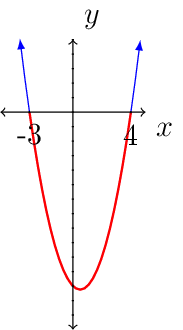
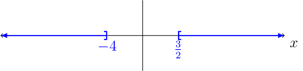

Section 1.7 - Inequalities#
An inequality says that one expression is greater than, greater than, or equal to, less than, or less than or equal to another.
Property 2 (Properties of Inequality)
Let \(a\), \(b\), and \(c\) represent real numbers.
If \(a<b\), then \(a+c<b+c\).
If \(a<b\) and \(c>0\), then \(ac<bc\).
If \(a<b\) and \(c<0\), then \(ac>bc\).
(Replace \(<\) with {\(>\), \(\le\), or \(\ge\)} and results are similar. Except for when looking at conditions on \(c\).)
Linear Inequalities#
Definition 2
A linear inequality in one variable is an inequality that can be written in the form
(Replace \(<\) with {\(>\), \(\le\), or \(\ge\)} and results are similar.)
Set-Builder Notation |
Verbal Description |
Interval Notation |
|---|---|---|
\(\{x\,|\,x>a\}\) |
The set of real numbers greater than \(a\). |
\((a,\infty)\) |
\(\{x\,|\,x\ge a\}\) |
The set of real numbers greater than or equal to \(a\). |
\([a,\infty)\) |
\(\{x\,|\,x<a\}\) |
The set of real numbers less than \(a\). |
\((-\infty,a)\) |
\(\{x\,|\,x\le a\}\) |
The set of real numbers less than or equal to \(a\). |
\((-\infty,a]\) |
\(\{x\,|\,a<x<b\}\) |
The set of real numbers between \(a\) and \(b\). |
\((a,b)\) |
\(\{x\,|\,a\le x\le b\}\) |
The set of real numbers between \(a\) and \(b\), inclusive. |
\([a,b]\) |
\(\{x\,|\,a<x\le b\}\) |
The set of real numbers greater than \(a\) and less than or equal to \(b\). |
\((a,b]\) |
\(\{x\,|\,a\le x<b\}\) |
The set of real numbers greater than or equal to \(a\) and less than \(b\). |
\([a,b)\) |
\(\{x\,|\,x<a\text{ or }x>b\}\) |
The set of real numbers less than \(a\) or greater than \(b\). |
\((-\infty,a)\cup(b,\infty)\) |
\(\{x\,|\,x\in\mathbb{R}\}\) |
The set of all real numbers |
\((-\infty,\infty)\) |
Example 14
In Business, the Profit function is the difference between the Revenue function and the Cost function, i.e.,
Ideally business would like Profit to be positive:
Use \(P(x)=R(x)-C(x)\) and rewrite \(P(x)>0\) in terms of \(R(x)\) and \(C(x)\).
Solution:
Let \(R(x)=45x\) and \(C(x)=30x+5250\). Find when the profit is positive.
Solution:
Interpret the results.
Solution:
This means we expect to maintain positive profits when more than 350 units are produced and sold. (Why?)
Quadratic Inequality#
Definition 3
A quadratic inequality is an inequality that can be written in the form
Example 15
Solve the quadratic inequality
Solution:
Note \(x^{2}-x-12<0\) occurs at the red curve:

Notice that if we first know when \(x^{2}-x-12=0\) we can start to figure out when \(x^{2}-x-12<0\) .
When is \(x^{2}-x-12=0\)?
When is \(x^{2}-x-12\) positive?
If \(x\) is \(-4\) then what? (why ask about when \(x=-4\)?)
If \(x\) is \(5\) then what? (why ask about when \(x=5\)?)
what is \(x^{2}-x-12\) negative?
If \(x=0\) then what? (why ask when \(x=0\)?)
This method can be generalized in the following way.
Algorithm (Solving quadratic inequality)
What was the first thing we did to solve the original inequality? (\(ax^{2}+bx+c=0\))
After finding when \(ax^{2}+bx+c=0\) we identified how many subintervals? (three (or two) subintervals)
In those three subintervals we did what in those subintervals? (we tested if \(ax^{2}+bx+c\) is positive or negative)
Example 16
Solve
Solution:
First, we will solve
Second, identify three subintervals: \((-\infty,-4]\cup[-4,\frac{3}{2}]\cup[\frac{3}{2},\infty)\).
Third,

Example 17
If an object is launched from ground level with an initial velocity of 144 feet per second, its height \(s\) in feet \(t\) seconds after launching is
Solution:
Solve the inequality
Second, identify the three subintervals
Third, test values at each subinterval.
This means the solution set for the inequality
Other Inequalities#
Example 18
Solve
Solution:
First, we solve
Second, identify the different subintervals
Third, test each of the subintervals
This means the solution set for the inequality
Example 19
Solve
Solution:
In this case there is two inequalities to solve
First, solve the following two cases:
Solve \(-3=\dfrac{3x-4}{-5}\)
Solve \(\dfrac{3x-4}{-5}=4\)
Second, identify the different subintervals
Third, test each subinterval for validity
Test \(x=-10\)
Test \(x=0\)
Test \(x=10\)
Solve the following rational inequality.
Note that \(\dfrac{1-x}{x+2}\) is undefined when \(x=-2\).
First, we will solve
Since there isn’t an \(x\) such that \(\dfrac{1-x}{x+2}=-1\) and \(\frac{1-x}{x+2}\) is undefined at \(x=-2\). We will consider two subintervals:
Test \(x=-10\)
Test \(x=0\)
Therefore, the solution set for the inequality is
Solve the following inequality
Note,
\(\dfrac{(x^{2}-4)^{2}}{(x-5)(x-3)}\) is undefined when \(x=5\) and \(x=3\).
\(\dfrac{(x^{2}-4)^{2}}{(x-5)(x-3)}=0\) when \(x=\pm2\).
\(\dfrac{(x^{2}-4)^{2}}{(x-5)(x-3)}=\frac{(x-2)^{2}(x+2)^{2}}{(x-5)(x-3)}\)
This means we have the following subintervals
Test \(x=-3\)
Test \(x=0\)
Test \(x=4\)
Test \(x=6\)
therefore, the solution set is